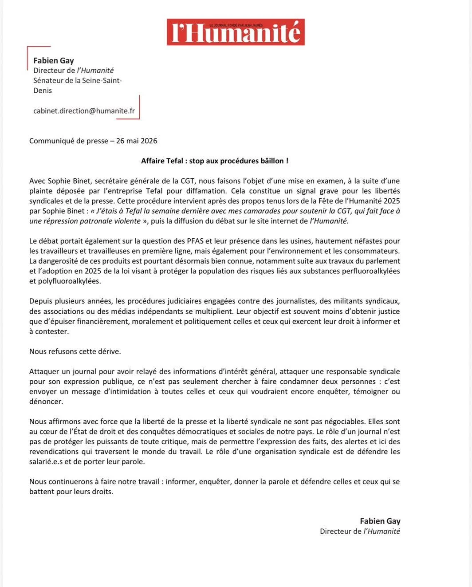

Prise de parole relayée
Fabien Gay appelle à défendre les libertés de la presse et syndicales
Date de mise à jour indiquée par Facebook · 26 mai 2026
Repères éditoriaux
Fabien Gay prend la parole comme directeur de la publication de L’Humanité. Il annonce sa mise en examen aux côtés de Sophie Binet, secrétaire générale de la CGT, et appelle à défendre les libertés de la presse et syndicales.
Texte de la publication · Fabien Gay
Mis en examen en tant que directeur de publication de l’Humanité aux côtés de Sophie Binet, secrétaire générale de la CGT.
Le groupe Tefal ne nous fera pas taire !
Soutenez les libertés de la presse et syndicales.

Sources
Fabien Gay · publication relayée par le PCF 79 · bibliothèque Facebook · AR-0002-FB-00769
À lire aussi · Stop à la répression et à la criminalisation des luttes syndicales